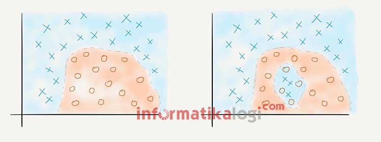
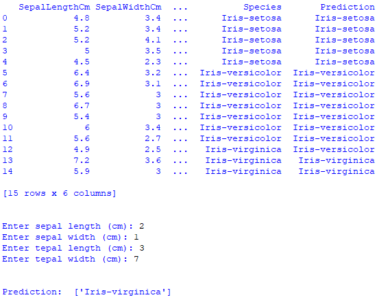

Algoritma K-Nearest Neighbor (K-NN)¶
Algoritma K-Nearest Neighbor (K-NN) adalah sebuah metode klasifikasi terhadap sekumpulan data berdasarkan pembelajaran data yang sudah terklasifikasikan sebelumya. Termasuk dalam supervised learning, dimana hasil query instance yang baru diklasifikasikan berdasarkan mayoritas kedekatan jarak dari kategori yang ada dalam K-NN.
Ilustrasi cerita dari K-NN adalah sebagai berikut:
*******Bertanya pada Tetangga** – Anda diundang ke sebuah pertemuan. Namun, Anda tidak tahu tema dari pertemuan tersebut, maupun kegiatan apa saja yang akan dilakukan di pertemuan tersebut. Anda benar-benar tidak tahu apakah pertemuan itu akan bermanfaat atau tidak untuk Anda. Yang Anda tahu, beberapa orang teman Anda juga diundang ke acara yang sama. Dalam kondisi seperti itu, apa yang Anda lakukan?***
**
Cara yang biasanya dilakukan oleh banyak orang dalam menangani masalah seperti itu adalah dengan bertanya kepada teman-teman apakah mereka akan datang ke pertemuan tersebut atau tidak. Biasanya, orang-orang yang pertama ditanya adalah orang-orang yang dekat dengan Anda. Maka, Anda mencoba mengontak enam orang teman yang biasa jadi teman main Anda. Dari enam orang tersebut, empat orang menyatakan akan datang, tapi dua orang ternyata memutuskan tidak datang, entah mengapa alasannya. Keputusan apa yang Anda akan ambil?

Gambar diatas menggambarkan ide dari algoritma k-Nearest Neighbours (kNN). Anda ingin mengambil sebuah keputusan (kelas) antara datang atau tidak datang ke sebuah pertemuan. Untuk mendukung pengambilan keputusan tersebut, Anda melihat mayoritas dari keputusan teman atau tetangga Anda (instance lainnya). Teman atau tetangga tersebut Anda pilih berdasarkan kedekatannya dengan Anda. Ukuran kedekatan pertemanan ini bisa bermacam-macam: satu hobi, satu kelas, atau hal-hal lainnya. Ukuran-ukuran tersebut bisa juga digunakan bersamaan, misalnya si A itu tetangga, satu hobi, dan satu kelas; sedangkan si B hanya satu kelas saja.
Tahapan Langkah Algoritma K-NN¶
- Menentukan parameter k (jumlah tetangga paling dekat).
- Menghitung kuadrat jarak eucliden objek terhadap data training yang diberikan.
- Mengurutkan hasil no 2 secara ascending (berurutan dari nilai tinggi ke rendah)
- Mengumpulkan kategori Y (Klasifikasi nearest neighbor berdasarkan nilai k)
- Dengan menggunakan kategori nearest neighbor yang paling mayoritas maka dapat dipredisikan kategori objek.
Kelebihan dan Kekurangan dari Algoritma K-NN¶
Kelebihan
- Sangat nonlinear
- kNN merupakan salah satu algoritma (model) pembelajaran mesin yang bersifat nonparametrik. Pembahasan mengenai model parametrik dan model nonparametrik bisa menjadi artikel sendiri, namun secara singkat, definisi model nonparametrik adalah model yang tidak mengasumsikan apa-apa mengenai distribusi instance di dalam dataset. Model nonparametrik biasanya lebih sulit diinterpretasikan, namun salah satu kelebihannya adalah garis keputusan kelas yang dihasilkan model tersebut bisa jadi sangat fleksibel dan nonlinear.
- Mudah dipahami dan diimplementasikan
- Dari paparan yang diberikan dan penjelasan cara menghitung jarak dalam artikel ini, cukup jelas bahwa algoritma kNN mudah dipahami dan juga mudah dimplementasikan. Untuk mengklasifikasi instance x menggunakan kNN, kita cukup mendefinisikan fungsi untuk menghitung jarak antar-instance, menghitung jarak x dengan semua instance lainnya berdasarkan fungsi tersebut, dan menentukan kelas x sebagai kelas yang paling banyak muncul dalam k instance terdekat.
Kekurangan
-
Perlu menunjukkan parameter K (jumlah tetangga terdekat)
-
Tidak menangani nilai hilang (missing value) secara implisit
-
Jika terdapat nilai hilang pada satu atau lebih variabel dari suatu instance, perhitungan jarak instance tersebut dengan instance lainnya menjadi tidak terdefinisi. Bagaimana coba, menghitung jarak dalam ruang 3-dimensi jika salah satu dimensi hilang? Karenanya, sebelum menerapkan kNN kerap dilakukan imputasi untuk mengisi nilai-nilai hilang yang ada pada dataset. Contoh teknik imputasi yang paling umum adalah mengisi nilai hilang pada suatu variabel dengan nilai rata-rata variabel tersebut (mean imputation).
-
Sensitif terhadap data pencilan (outlier)

Contoh Kasus Perhitungan K-NN¶
import numpy as np # linear algebra
import pandas as pd # data processing, CSV file I/O (e.g. pd.read_csv)
from sklearn.neighbors import KNeighborsClassifier
from sklearn import model_selection
from sklearn.model_selection import train_test_split
from sklearn.metrics import accuracy_score
#memuat file csv
df=pd.read_csv('Iris.csv')
#Inisialisasi Gaussian Naive Bayes
clf=KNeighborsClassifier(n_neighbors=3)
# Dataset validasi dataset
array = df.values
X = array[:,1:5]
Y = array[:,5]
# Sepertiga data sebagai bagian dari set tes
validation_size = 15
seed = 7
X_train, X_validation, Y_train, Y_validation = model_selection.train_test_split(X, Y, test_size=validation_size, random_state=seed)
# Opsi tes dan metrik evaluasi
scoring = 'accuracy'
#Menyesuaikan set training
clf.fit(X_train, Y_train)
#Predicting untuk Set Tes
pred_clf = clf.predict(X_validation)
#Buat file prediksi dengan gabungan data asli dan prediksi
#Membentuk kembali diperlukan untuk melakukan penggabungan
pred_clf_df = pd.DataFrame(pred_clf.reshape(15,1))
#Ganti nama kolom untuk menunjukkan prediksi
pred_clf_df.rename(columns={0:'Prediction'}, inplace=True)
#membentuk kembali dataset uji
X_validation_df = pd.DataFrame(X_validation.reshape(15 ,4))
#menggabungkan dua bingkai data panda di atas kolom untuk membuat dataset prediksi
pred_outcome = pd.concat([X_validation_df, pred_clf_df], axis=1, join_axes=[X_validation_df.index])
pred_outcome.rename(columns = {0:'SepalLengthCm', 1:'SepalWidthCm', 2:'PetalLengthCm', 3:'PetalWidthCm'}, inplace=True)
del df['Id']
#menggabungkan prediksi dengan dataset asli
pred_comp = pd.merge(df,pred_outcome, on=['SepalLengthCm','SepalWidthCm','PetalLengthCm','PetalWidthCm'])
#cetak 10 baris prediksi akhir
print((pred_comp).head(15))
print ("\n")
# make prediction
sl = input('Enter sepal length (cm): ')
sw = input('Enter sepal width (cm): ')
tl = input('Enter tepal length (cm): ')
tw = input('Enter tepal width (cm): ')
dataClass = clf.predict([[sl,sw,tl,tw]])
print ("\n")
print('Prediction: '), dataClass
print ("\n")
Output dari program diatas adalah :

Referensi :
https://informatikalogi.com/algoritma-k-nn-k-nearest-neighbor/